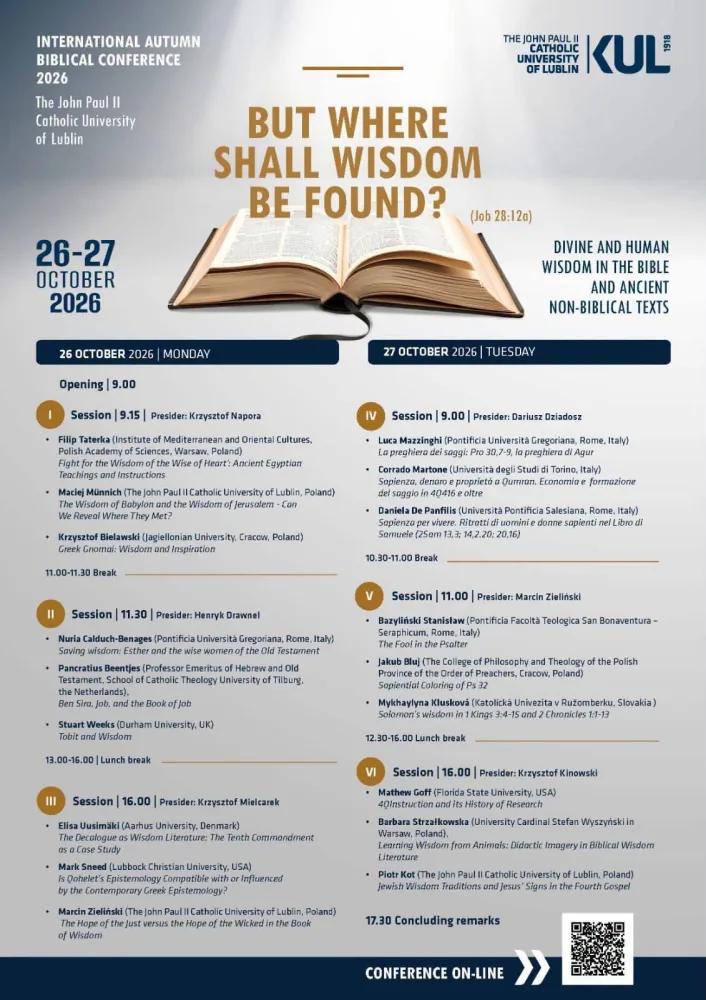
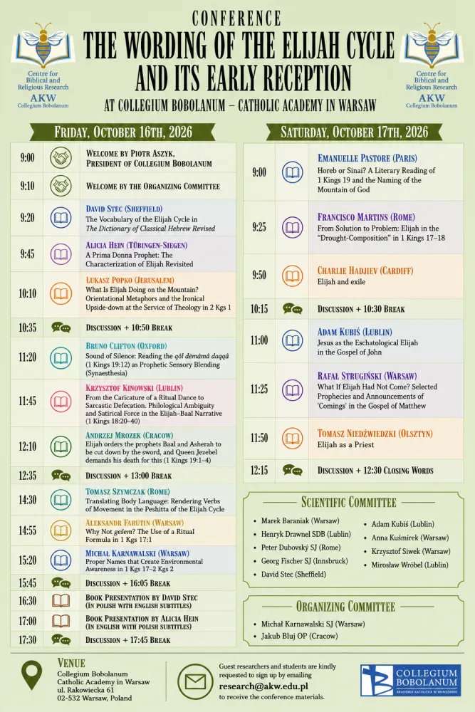
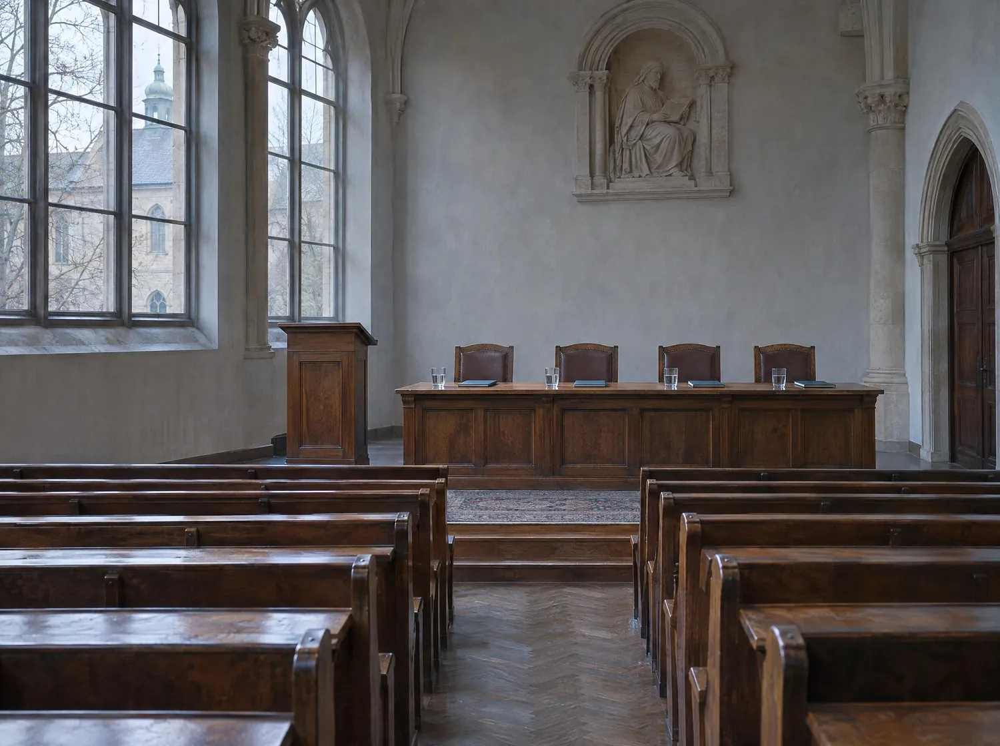
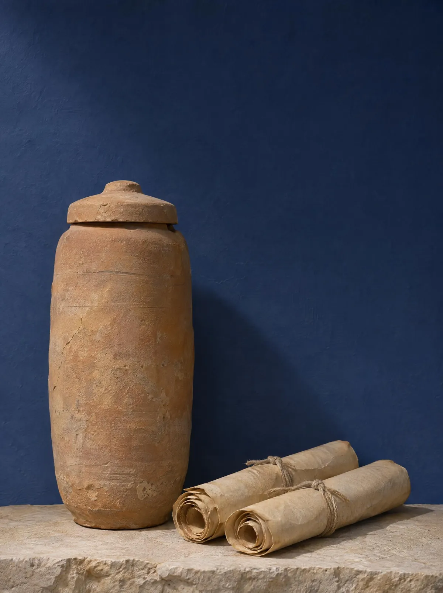

StowarzyszenieBiblistów Polskich
„Celem Stowarzyszenia jest pogłębianie znajomości Pisma Świętego poprzez badania naukowe i rozpowszechnianie Słowa Bożego zgodnie ze wskazaniami Kościoła, wyrażonymi w sposób szczególny przez Sobór Watykański II” Statut SBP, art. 6
Aktualności
Zaproszenia do udziału w międzynarodowej konferencji biblijnej: The Faces of Suffering: Exploring the Lives of Biblical Figures
Oblicza cierpienia w Biblii – zaproszenie do zgłaszania referatów na konferencję w Lublinie
21–22 października 2027 r. w Lublinie odbędzie się międzynarodowa konferencja biblijna „The Faces of Suffering: Exploring the Lives of Biblical Figures”. Organizatorzy zapraszają biblistów do zgłaszania referatów do 15 lutego 2027 r.
Jak postacie biblijne przeżywają cierpienie fizyczne, psychiczne, moralne czy duchowe? Jak interpretują to doświadczenie i jak na nie odpowiadają? Te pytania wyznaczają temat spotkania, które odbędzie się w Instytucie Nauk Biblijnych Katolickiego Uniwersytetu Lubelskiego Jana Pawła II przy Alejach Racławickich 14.
Zgłoszenia referatów i udział w konferencji
- Zgłoszenie referatu. Do 15 lutego 2027 r. należy przesłać tytuł i abstrakt za pomocą formularza zgłoszeniowego. Organizatorzy poinformują autorów o wynikach kwalifikacji 1 marca 2027 r.
- Język i czas wystąpienia. Referaty będą wygłaszane w języku angielskim. Na każde wystąpienie przewidziano 25 minut.
- Forma udziału. Obrady odbędą się przede wszystkim stacjonarnie. Osoby, które nie mogą przyjechać do Lublina, będą mogły wygłosić referat online.
- Rejestracja. Udział jest bezpłatny. Wcześniejsza rejestracja obowiązuje zarówno prelegentów, jak i słuchaczy.
Konferencję organizują wspólnie Papieski Instytut Biblijny w Rzymie, Greckokatolicki Wydział Teologiczny Uniwersytetu Preszowskiego, Instytut Nauk Biblijnych Katolickiego Uniwersytetu Lubelskiego Jana Pawła II oraz Stowarzyszenie „Verbum Sacrum”.
Jesienne Dni Biblijne 2026 - But Where Shall Wisdom Be Found?
Instytut Nauk Biblijnych Katolickiego Uniwersytetu Lubelskiego Jana Pawła II zaprasza na międzynarodową konferencję naukową z cyklu Jesienne Dni Biblijne, która odbędzie się 26–27 października 2026 r. Tematem tegorocznego spotkania będzie „Divine and Human Wisdom in the Bible and Ancient Non-Biblical Texts”. Obrady zostaną przeprowadzone online, w języku angielskim.
Hasło przewodnie konferencji – „But Where Shall Wisdom Be Found?” – nawiązuje do pytania z Księgi Hioba (Hi 28,12a). Badacze reprezentujący polskie i zagraniczne ośrodki naukowe podejmą refleksję nad mądrością Bożą i ludzką, jej źródłami oraz znaczeniem w tradycjach biblijnych i literaturze świata starożytnego.
Program obejmuje sześć sesji naukowych. Wśród poruszanych zagadnień znajdą się m.in. mądrość w Księdze Hioba, Księdze Syracha i Księdze Tobiasza, tradycje mądrościowe w Psalmach, starożytne egipskie pouczenia oraz teksty z Qumran. Różnorodność tematów pozwoli spojrzeć na biblijną mądrość w szerokim kontekście religijnym, literackim i kulturowym.
Serdecznie zapraszamy biblistów, teologów, studentów oraz wszystkich zainteresowanych Biblią i dziedzictwem starożytności do udziału w tym wydarzeniu.

INTERDYSCYPLINARNE SYMPOZJUM ŚWIAT BIBLII. BIBLIA W KULTURZE ŚWIATA IV EDYCJA

Życzenia Przewodniczącego SBP w dniu wspomnienia św. Hieronima

Sympozjum o proroku Eliaszu - Warszawa, 16-17 października 2026 r.
Zapraszamy na międzynarodowe sympozjum naukowe „The Wording of the Elijah Cycle and Its Early Reception”, które odbędzie się 16–17 października 2026 r. w Collegium Bobolanum – Akademii Katolickiej w Warszawie.
Spotkanie będzie poświęcone językowi, interpretacji i wczesnej recepcji biblijnego cyklu o proroku Eliaszu. W programie przewidziano wystąpienia badaczy z polskich i zagranicznych ośrodków naukowych oraz dyskusje.
Wydarzenie odbywa się pod patronatem Stowarzyszenia Biblistów Polskich. Wstęp wolny. Szczegółowy program zamieszczono na plakacie.

23.11.2026, poniedziałek
Rok A, II, Dzień Powszedni albo wspomnienie św. Klemensa I, papieża i męczennika albo wspomnienie św. Kolumbana, opata
Czytanie z Apokalipsy Świętego Jana Apostoła
Ja, Jan, ujrzałem: A oto Baranek stojący na górze Syjon, a z Nim sto czterdzieści cztery tysiące, mające imię Jego i imię Jego Ojca wypisane na czołach. I usłyszałem głos z nieba, jakby głos mnogich wód i jakby głos wielkiego gromu. A głos, który usłyszałem, brzmiał tak, jak gdyby harfiarze uderzali w swe harfy.
I śpiewają jakby pieśń nową przed tronem i przed czterema Istotami żyjącymi, i przed Starcami: a nikt tej pieśni nie mógł się nauczyć prócz stu czterdziestu czterech tysięcy – wykupionych z ziemi.
Ci Barankowi towarzyszą, dokądkolwiek idzie; ci spośród ludzi zostali wykupieni na pierwociny dla Boga i dla Baranka, a w ustach ich kłamstwa nie znaleziono: są bez zarzutu.
Oto lud wierny, szukający Boga
Do Pana należy ziemia i wszystko, co ją napełnia, *
świat cały i jego mieszkańcy.
Albowiem On go na morzach osadził *
i utwierdził ponad rzekami.
Oto lud wierny, szukający Boga
Kto wstąpi na górę Pana, *
kto stanie w Jego świętym miejscu?
Człowiek rąk nieskalanych i czystego serca, *
którego dusza nie lgnęła do marności.
Oto lud wierny, szukający Boga
On otrzyma błogosławieństwo od Pana *
i zapłatę od Boga, swego Zbawcy.
Oto pokolenie tych, którzy Go szukają, *
którzy szukają oblicza Boga Jakuba.
Oto lud wierny, szukający Boga
Alleluja, alleluja, alleluja
Czuwajcie i bądźcie gotowi,
bo o godzinie, której się nie domyślacie,
Syn Człowieczy przyjdzie.
Alleluja, alleluja, alleluja
Słowa Ewangelii według Świętego Łukasza
Gdy Jezus podniósł oczy, zobaczył, jak bogaci wrzucali swe ofiary do skarbony. Zobaczył też, jak pewna uboga wdowa wrzuciła tam dwa pieniążki, i rzekł: «Prawdziwie, powiadam wam: Ta uboga wdowa wrzuciła więcej niż wszyscy inni. Wszyscy bowiem wrzucali na ofiarę Bogu z tego, co im zbywało; ta zaś z niedostatku swego wrzuciła wszystko, co miała na utrzymanie».
Historia
Stowarzyszenie Biblistów Polskich zostało utworzone 6 grudnia 2003 r. na bazie Statutu zatwierdzonego 1 grudnia 2000 r. przez 309. Zebranie Plenarne Konferencji Episkopatu Polski.
W posiedzeniu inauguracyjnym, które odbyło się w Warszawie, uczestniczyli członkowie Zarządu Sekcji Biblistów Polskich, wybranego 18 września 2003 r. w Koszalinie podczas 41. Sympozjum Biblistów Polskich na pięcioletnią kadencję (2003-2008). W ciągu pięciu pierwszych lat istnienia i działalności SBP podjęto wiele różnych inicjatyw, które sprostać miały zadaniom wyznaczonym przez Statut Stowarzyszenia. Organizowano kolejne Sympozja Biblistów Polskich, a członkowie Stowarzyszenia, poprzez publikacje i pozostałą działalność naukowo – dydaktyczną, przyczyniali się do rozwoju i pogłębiania znajomości Pisma Świętego w swoich środowiskach i poza nimi. Na V Walnym Zebraniu Stowarzyszenia Biblistów Polskich we Wrocławiu, 16 września 2008 roku, wybrano nowy Zarząd SBP na II., pięcioletnią, kadencję (lata 2008-2013).
„Celem Stowarzyszenia jest pogłębianie znajomości Pisma Świętego poprzez badania naukowe i rozpowszechnianie Słowa Bożego zgodnie ze wskazaniami Kościoła, wyrażonymi w sposób szczególny przez Sobór Watykański II” (Statut SBP, art. 6). Podejmując zadania określone w Statucie, Stowarzyszenie uznaje, docenia, podejmuje i pragnie dalej rozwijać wysiłki wielu pokoleń biblistów i teologów polskich, którzy niestrudzenie czytali, objaśniali, tłumaczyli i upowszechniali Pismo Święte oraz propagowali pogłębioną znajomość zawartego w nim przesłania i realiów.

Ks. prof. dr hab. Waldemar CHROSTOWSKI
Pięćdziesiąt Sympozjów Biblistów Polskich – bilans i perspektywy
Pięćdziesiąte Sympozjum Biblistów Polskich (Warszawa, 19-20 września 2012) sprzyja temu, by oglądając się w przeszłość, obejmującą ponad pół wieku najnowszej historii biblistyki polskiej, dokonać próby podsumowania i bilansu oraz zarysować zadania i perspektywy na przyszłość. Wiele do myślenia daje sam fakt, że zaistniała i utrwaliła się piękna tradycja dorocznych spotkań, podczas których naukowa refleksja i dociekania idą w parze z nawiązywaniem znajomości i zacieśnianiem przyjaźni, co na pewno sprzyja lepszym postępom badań naukowych oraz pracy dydaktycznej. Ponad pół wieku to zarazem wystarczająco długi czas, aby dokonać jego periodyzacji, umownie wyznaczając etapy, z których każdy posiada własną specyfikę, odzwierciedlającą zmieniające się uwarunkowania i wyzwania, jakim należało sprostać.
Cały tekst opracowania przeczytasz tutaj »
SBP - pobierzZarząd
V kadencja (lata 2023-2028)
- Przewodniczący:ks. prof. dr hab. Dariusz Kotecki
- Wiceprzewodniczący:ks. dr hab. Roman Bogacz
- Sekretarz Zarządu:ks. dr Adrian Mętel (od IX 2026)
- Członkowie:dr hab. Barbara Strzałkowska
- Członkowie:ks. dr hab. Wojciech Węgrzyniak
- Członkowie:ks. prof. dr hab. Janusz Kręcidło
- Członkowie:ks. prof. dr hab. Dariusz Dziadosz
- Członkowie:ks. prof. dr hab. Sławomir Stasiak
Sympozja
PROGRAM
63. Sympozjum Stowarzyszenia Biblistów Polskich, SZCZECIN, 17-19 września 2026
Program 63. Sympozjum Stowarzyszenia Biblistów Polskich
Szczecin, 17-19 września 2026 roku

- Przyjazd 16:30 Zebranie Zarządu SBP
- 18:00Wspólna kolacja
- 19:00XXII Walne Zebranie Stowarzyszenia Biblistów Polskich
- 1) wręczenie nagrody Stowarzyszenia Biblistów Polskich za „Teksty z Ugarit” dr. hab. Maciejowi Münnichowi, dr. hab. Marcinowi Majewskiemu, ks. dr. Mariuszowi Szmajdzińskiemu, dr. Andrzejowi Mrozkowi;
- 2) wręczenie Księgi Pamiątkowej ks. prof. Stefanowi Szymikowi (laudacja: ks. prof. Mirosław Wróbel)
- Program artystyczny Ewa Rozkrut Dance (30 min)
- Msza św. w parafii pw. św. Mikołaja, ul. Golisza 7 (20 minut pieszo)
- 07:45Liturgia godzin – oratorium
- 08:00Śniadanie
- 09:00Otwarcie 63. Sympozjum Biblistów Polskich: prof. dr hab. Waldemar Tarczyński - rektor Uniwersytetu Szczecińskiego I sesja
- 9:15ks. prof. dr hab. Dariusz Dziadosz, KUL: Najwcześniejsi prorocy w Izraelu – pomiędzy historią a teologią. Podtytuł: Monarchiczne instytucje Lewantu i/a tradycje Biblii Hebrajskiej
- 10:15Dyskusja
- 10:30Przerwa (kawa/herbata)
- II sesja
- 11:00dr hab. Barbara Strzałkowska, UKSW: Geografia Dwunastu Proroków w Septuagincie. Między translacją a interpretacją
- 11:30dr hab. Piotr Briks, US: Śladem poszukiwań grobu proroka Micheasza
- 12:00ks. prof. dr hab. Dariusz Kotecki, UMK: Prorocy Mniejsi a Apokalipsa Świętego Jana
- 12:30Dyskusja
- 12:45Pamiątkowa fotografia
- 13:30Obiad
- III sesja
- 15:30Rejs po porcie Szczecińskim statkiem Queen of Szczecin Roman Kempiński - Romcio Tomcio czyli szczecińska Biblia wierszem pisana
- 18:00Msza w Katedrze św. Jakuba. Przewodniczy abp Wiesław Śmigiel
- kolacja przy katedrze - grill - wieczór wspólnotowy
- 07:45Liturgia godzin – oratorium
- 08:00Śniadanie
- VI sesja
- 9:00dr hab. Dorota Muszytowska, UKSW: Retoryczna funkcja metafor w Księdze Nahuma
- 9:30o. dr Jakub Waszkowiak OFM: Brama Złota w Jerozolimie w świetle badań archeologicznych i tradycji judeochrześcijańskich
- 10:00ks. dr Mariusz Szmajdziński: Góra Syjon jako miejsce kary i ocalenia w nauczaniu Dwunastu Proroków 10:30 Dyskusja 11:00 Przerwa (kawa/herbata)
- V sesja:
- 11:30ks. dr hab. Cezary Korzec, US: Model predyktywny w dydaktyce konwersatorium „Biblia jako tekst kultury”
- 11:50ks. dr Krzysztof Kinowski, KUL: Narracje prorockie w Księgach Królewskich w perspektywie historyczno-krytycznej
- 12:10ks. dr hab. Roman Mazur SDB, UPJPII: Drugie wydanie Słownika Analitycznego do Biblii Greckiej oraz Konkordancja do Biblii Greckiej
- 12:25Dyskusja
- 12:45Komunikaty końcowe, podsumowanie i zakończenie sympozjum
- 13:15Msza św. w parafii pw. św. Mikołaja, ul. Golisza 7 (20 minut pieszo) Przewodniczy ks. bp. Henryk Wejman
- 14:15Obiad
Sympozja
Zeszyty Naukowe
Zeszyty Naukowe SBP 16/2019
SPIS TREŚCI · Część II
Marcin Chrostowski, Geografia w służbie orędzia Księgi Judyty
Aleksandra Nalewaj, Funkcje kobiet w Janowej Ewangelii w świetle opisu spotkania przy studni (J 4,1-42)
Stanisław Sadowski, Udział Piotra w męce, śmierci i zmartwychwstaniu Jezusa – Pana (J 13; 17-21)
Adam Kubiś, Starotestamentowe tło piłatowego stwierdzenia Ecce Homo w J 19,5
Zdzisław Żywica, Sumienie (syneidēsis) według św. Pawła w świetle Listu do Rzymian
Jarosław Kwiatkowski, Koncepcja oddzielenia w narracjach Rdz 1 – 3 i jej recepcja w Rz 1- 8
Nagroda SBP

Nagroda SBP jest przyznawana za wybitną pozycję książkową wydaną w ciągu ostatnich trzech lat, za ważne dla biblistyki polskiej publikacje w czasopismach lub za wyróżniającą się działalność duszpasterską bądź inną działalność związaną z popularyzowaniem Biblii. (z regulaminu Nagrody SBP)
- Nagroda Stowarzyszenia Biblistów Polskich za rok 2007 - ks. prof. Janusz A. Frankowski
- Nagroda Stowarzyszenia Biblistów Polskich za rok 2004 - ks. dr Piotr Ostański za publikację: Bibliografia Biblistyki Polskiej 1945-2002, tt. 1-2, Poznań 2002.
Zasady członkostwa
Regulamin członkostwa określa, że członkami zwyczajnymi SBP mogą zostać wykładowcy Pisma Świętego, którzy posiadają co najmniej stopień licencjata teologii biblijnej lub analogiczny tytuł naukowy w pokrewnej dziedzinie. Habilitowani pracownicy naukowi uzyskują członkostwo na podstawie indywidualnie złożonego pisemnego akcesu, natomiast od pozostałych pracowników naukowo-dydaktycznych jest wymagana rekomendacja udzielona przez dwóch członków zwyczajnych.
Poniżej znajdą Państwo dwa typy formularza: dla samodzielnych oraz niesamodzielnych pracowników naukowych – należy wydrukować i ręcznie wypełnić wraz z podpisem odpowiedni formularz wraz z niżej załączoną ankietą, i przesłać go na załączony w Kontaktach adres SBP. (Proszę zauważyć, ze niesamodzielni pracownicy naukowi musza posiadać rekomendacje dwóch członków zwyczajnych SBP – którzy muszą podpisać ich deklarację).
Formularze członkostwa
- Regulamin członkostwa zwyczajnego SBP -POBIERZ